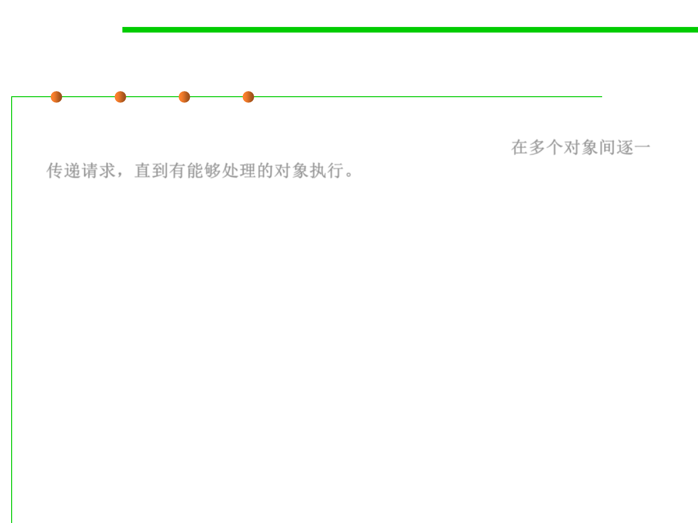

Chain of Responsibility
6.2 Design Patterns for Maintainability
▪ The chain of responsibility pattern allows you to pass a request to
from an object to the next until the request is fulfilled. 在多个对象间逐一
传递请求，直到有能够处理的对象执行。
▪ Intent:
– Avoid coupling the sender of a request to its receiver by giving more than
one object a chance to handle the request. Chain the receiving objects and
pass the request along the chain until an object handles it.
– E.g., you can pass a mortgage(贷款) application request to a bank manager,
and if the manager cannot approve the loan, it can be passed to his
supervisor and so on.
▪ Applicability:
– More than one object may handle a request, and the handler isn't known a
priori. The handler should be ascertained automatically.
– You want to issue a request to one of several objects without specifying the
receiver explicitly.
– The set of objects that can handle a request should be specified dynamically.